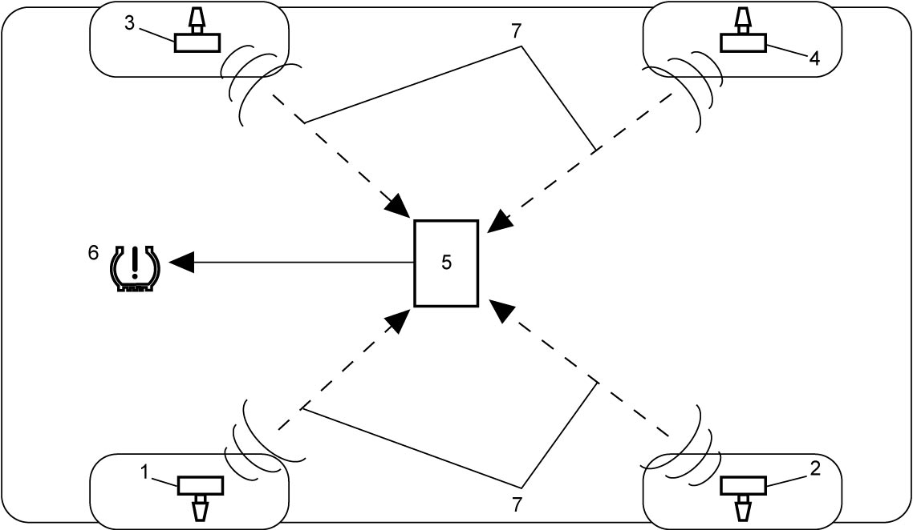

10D
| Tire Pressure Monitoring System Description |
Tire Pressure Monitoring System (TPMS) monitors air pressure in each tire except spare tire. It consists of low tire pressure warning light (6), tire pressure sensors (1) (2) (3) (4) and TPMS control module (5).
As a tire revolves (at vehicle speed of approximately 25 km/h (16 mile/h) or more), tire pressure sensor installed to each wheel transmits tire pressure data to TPMS control module. When tire pressure is lower than the standard value in the module, TPMS control module turns on low tire pressure warning light to warn the driver that tire pressure has decreased. Also, when any fault is detected in TPMS, it blinks low tire pressure warning light for 75 seconds and then the warning light remains lit to warn the driver that there is a fault in the system.
Operation of tire pressure sensor, TPMS control module and low tire pressure warning light is described below.

 "Expand image")
| 7. | Radio waves |
Tire Pressure Sensor
Tire pressure sensor consists of a pressure sensor, acceleration sensor, temperature sensor, control section, transmitter / receiver, battery and air valve.
Each tire pressure sensor assigns an individual ID code. Tire pressure detected by the tire pressure sensor, along with the ID code, rolling angle position, temperature, battery status, is transmitted to TPMS control module on the radio wave.
In the condition that 15 minutes have elapsed since the last driving of vehicle, when you start driving and the tire revolves at approximately 25 km/h (16 mile/h) or more, the pressure sensor transmits data to TPMS control module at 16-seconds interval (fast mode).
And, when the driving is continued for 640 seconds, the pressure sensor transmits data at 64-seconds interval (active mode).
However, when the acceleration sensor does not detect wheel rotation with the vehicle speed lower than approximately 25 km/h (16 mile/h), the data is sent to TPMS control module at 19-minutes interval to prevent battery power consumption (save mode).
TPMS Control Module and Low Tire Pressure Warning Light
TPMS control module receives signals from 4 tire pressure sensors, identifies data by the ID code of each tire pressure sensor and uses the identified data to compare air pressure in each tire with the tire pressure value that was configured in TPMS Setting Procedure. When tire pressure is judged to be lower than the specified value, TPMS control module turns on low tire pressure warning light in the combination meter and stores DTC in its memory. Also, when a fault in the system is detected, TPMS control module blinks low tire pressure warning light for 75 seconds and then the warning light remains lit, and stores the DTC in its memory.
TPMS control module has positioning function of tire pressure sensors as well.
NOTE:
Four ID codes of tire pressure sensor can be registered in TPMS control module. Therefore, when wheel with tire equipped with any other sensor is used as a running wheel, ID codes of all tire pressure sensors installed to 4 tires must be re-registered. When vehicle is driven without re-registration of the ID codes, TPMS control module detects faulty condition of the system and illuminates low tire pressure warning light after it blinks for 75 seconds. For the procedure to register the ID codes of tire pressure sensors in TPMS control module, refer to Registration Procedure for Tire Pressure Sensor ID Code.
Tire Pressure Setting
Adjust tire pressure referring to “Tire Placard” in accordance with the vehicle loading change. After changing tire pressure, select a suitable “TPMS setting” referring to TPMS Setting Procedure.
TPMS does not function correctly without consistency between the tire pressure and “TPMS setting”.